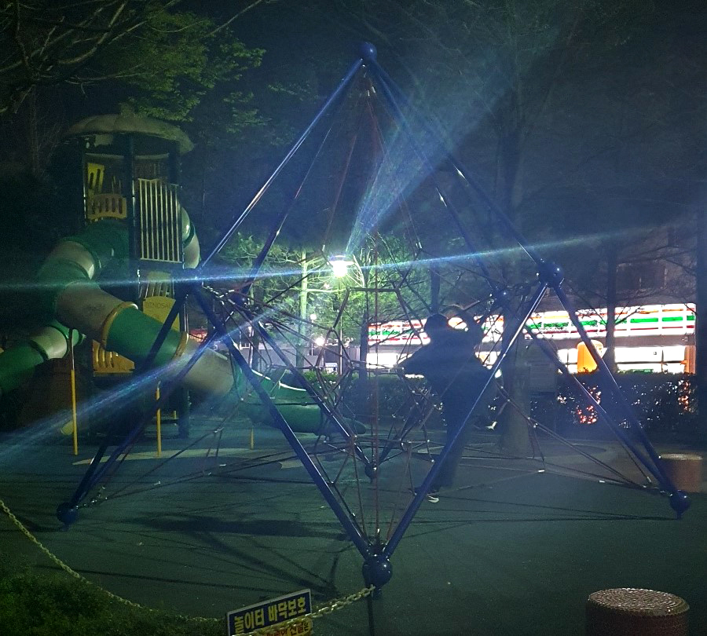
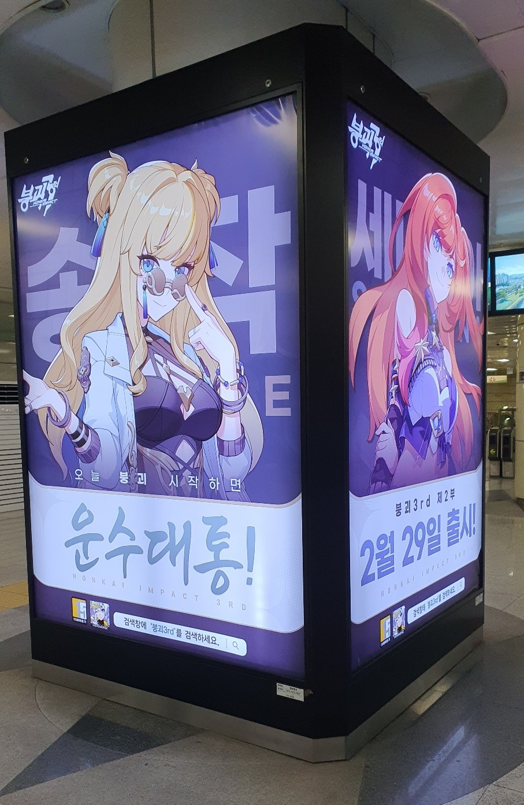
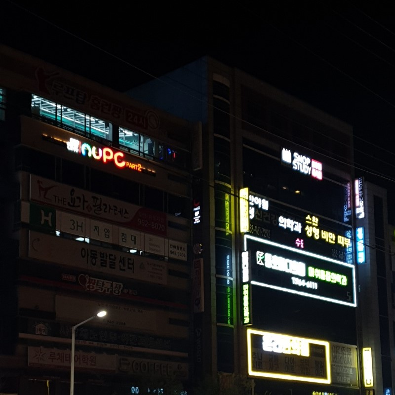
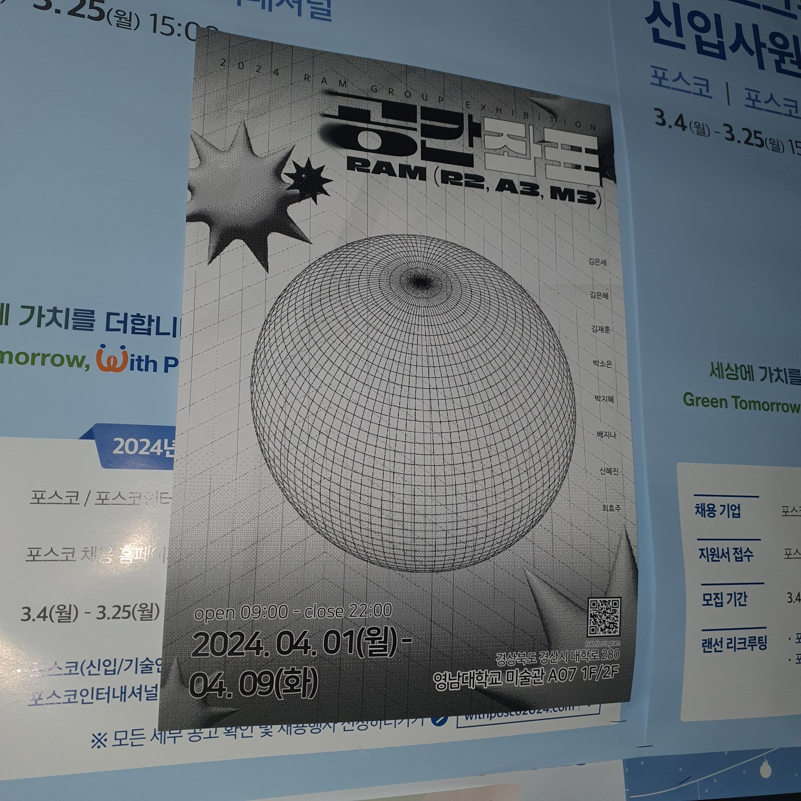
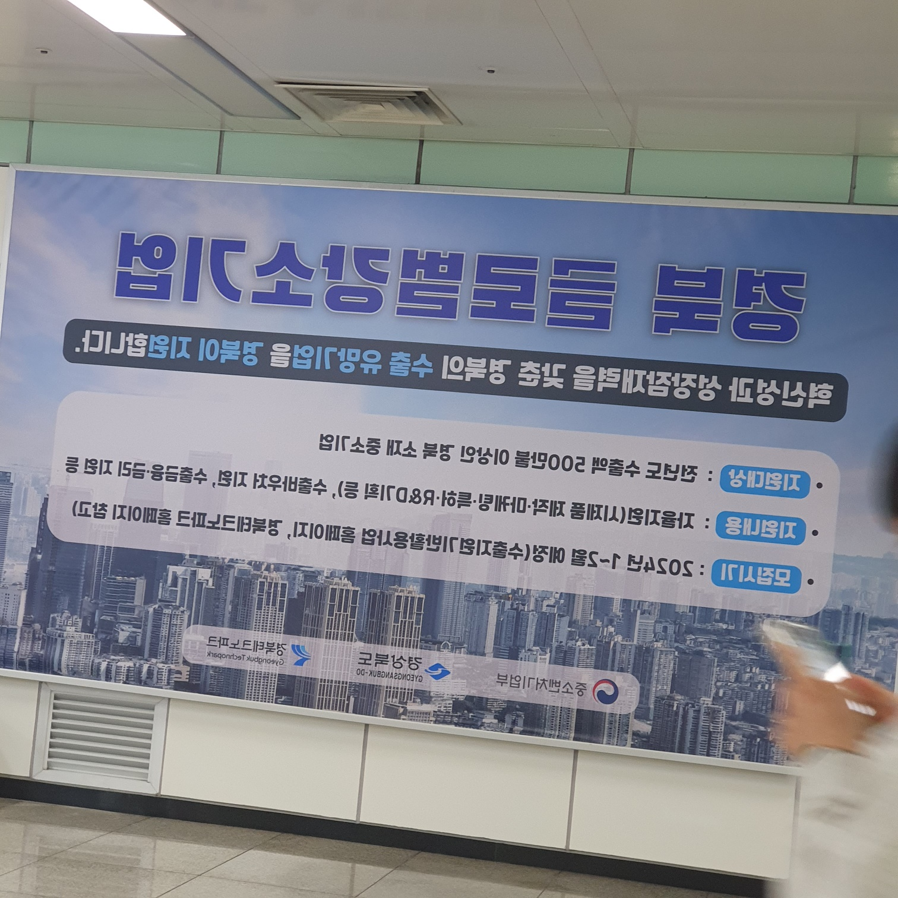
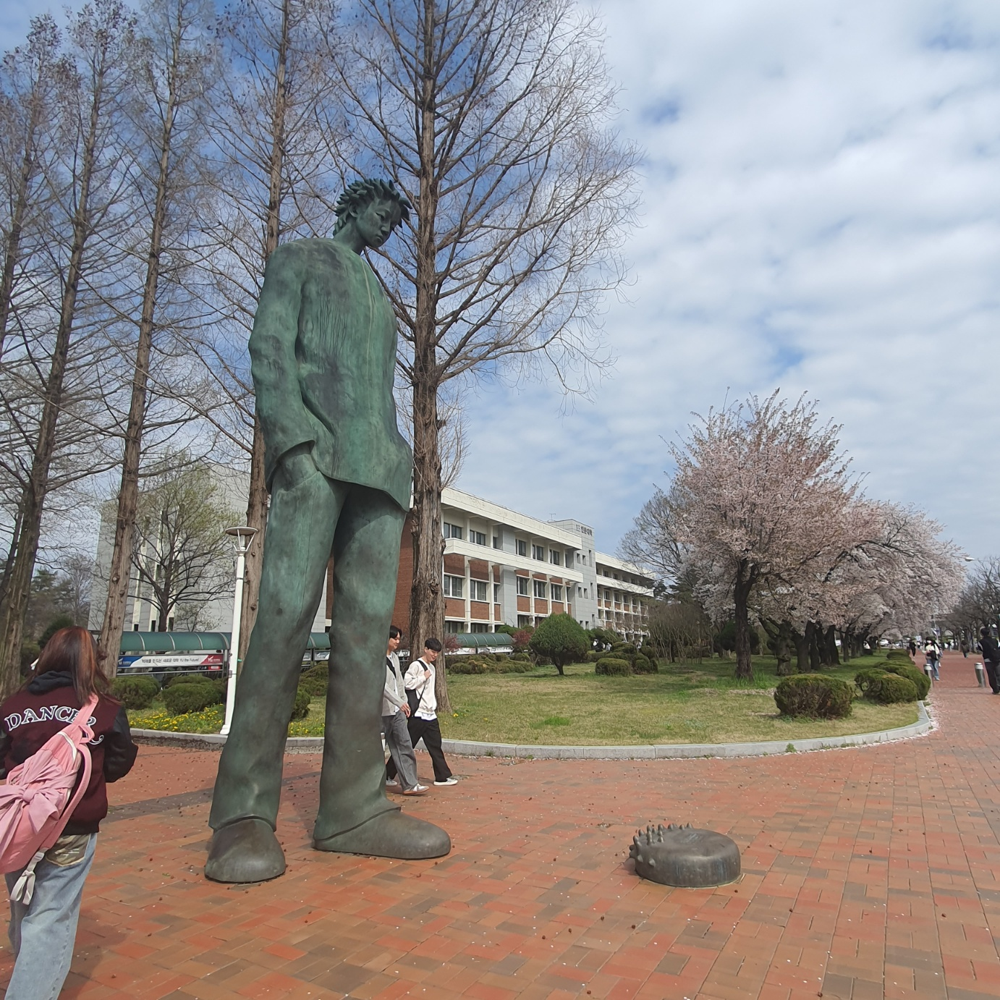
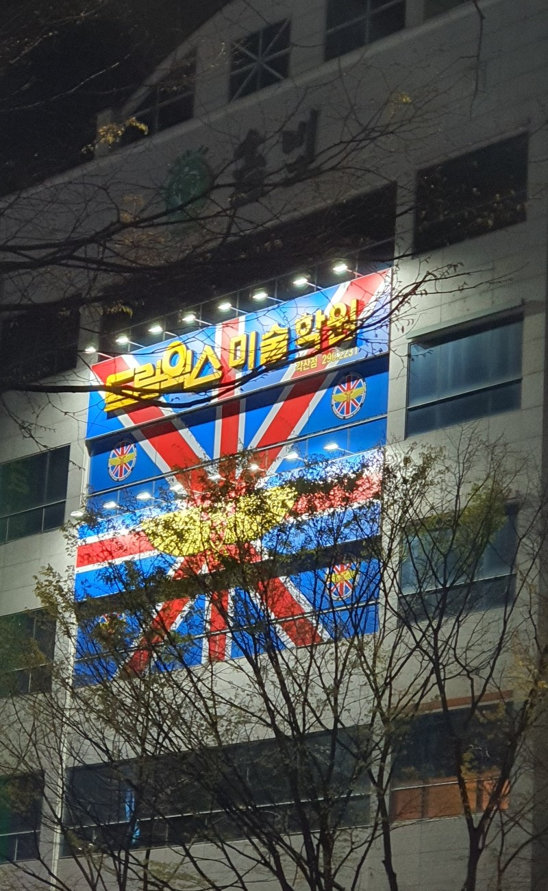
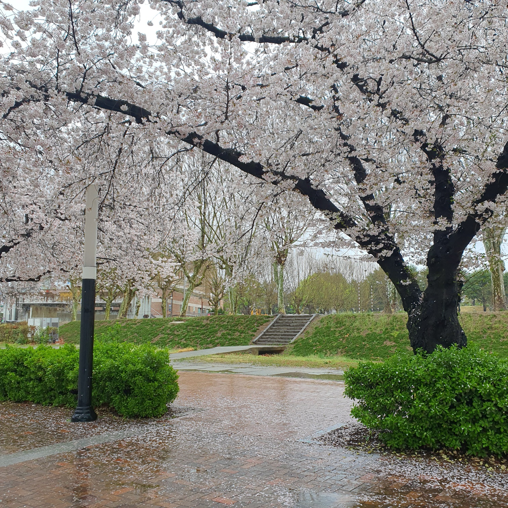
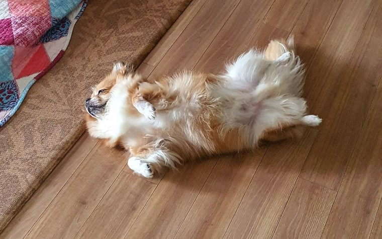
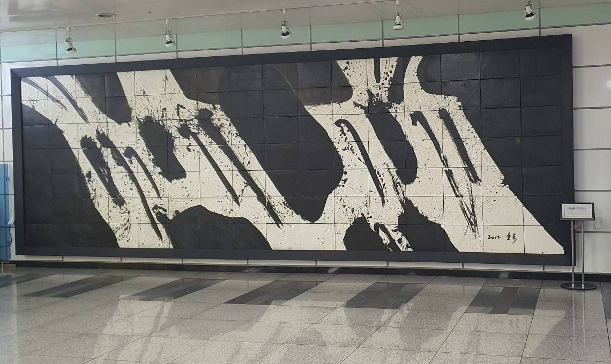

놀이기구
놀이터에서 발견한 처음 보는 놀이기구의 사진이다. 뒤쪽에서 오는 가로등의 빛 때문에 한눈에 보이지 않게 찍혔지만 자세히 보면 굉장히 기하학적인 모양으로 로프가 엮여 있어 예쁘다는 생각이 들었다. 재질을 바꿔서 모빌 같은 걸로 만들면 전시품도 될 법하고 나중에 일러스트로 형태를 따서 벡터화하면 쓰기 좋은 모양이 나올 것이다. 물론 지금은 너무 복잡한 형태라 어렵지만 일러스트를 배우다 보면 할 수 있게 될 것이다.
붕괴3rd 광고
우리 학교 지하철역에서 볼 수 있는 광고판이다. 최근에 가장 빠져서 플레이하고 있는 게임이 원신과 붕괴: 스타레일인데, 같은 게임사의 전작인 붕괴3rd의 광고를 보니 반가운 마음이 들었다. 이 회사의 게임에 빠져들게 하는 가장 큰 요인이 매력적인 캐릭터 디자인, 퀄리티 높은 애니메이션이라고 생각한다. 특히 최신작에서의 수려한 캐릭터 모델링에 감탄했던 기억이 있다. 시각디자인에서 가장 관심을 갖고 있는 분야가 3D 모델링이기 때문에 3D 모델링이 가장 활발하게 활용되는 곳 중 하나인 게임 분야에 지속적으로 관심을 갖게 된다.
조명이 켜진 간판
같은 시간대의 건물인데 한 건물은 대부분 조명이 꺼져 있고 한 건물은 거의 켜져 있는 것에서 대비감을 느껴 사진을 찍었다. 사진을 찍은 시간이 거의 밤 11시에 가까웠던 것을 생각해보면 늦은 밤 시간이라 스터디카페나 PC방 정도를 제외하면 이미 영업을 끝냈을 텐데 병원들까지 굳이 조명이 켜져있는 이유는 무엇일까? 오히려 영업하지 않는 시간에 조명을 켜두면 전기 소비도 늘어나고, 행인들이 혹시나 열려있는 병원이 아닐까 착각하게 하는 잘못된 정보 전달이 아닐까? 간판을 설치할 때 이런 것도 고려사항에 들어가는지 궁금했다.
공간좌표 포스터
학생회관 식당에서 발견한 포스터다. 깔끔한 정보 전달을 위주로 한 다른 포스터들과 달리 테마가 있는 디자인이 담겨 단연 눈에 들어왔다. 가까이 가서 보니 회화과 전시 포스터였다. 요즘 듣고 있는 타이포그래피 수업에서 매주 과제로 글자들을 배치하고 있다 보니 포스터를 볼 때 글자의 배치를 눈여겨 보게 된다. 여담으로, 이때도 해가 진 시간이라 주변이 어두워서 플래시를 켜고 찍었는데, 그럼에도 살짝 어둡게 사진이 찍힌 느낌이 흑백으로 된 포스터의 분위기와 나름 어울린다고 생각한다.
뒤집힌 광고판
이 사진 또한 지하철역에서 찍은 것이다. 평소엔 벽면에 뭐가 있든 관심을 가지지 않아 몰랐는데 사진이 아예 뒤집힌 채 광고판에 걸려 있었다. 대체 이게 무슨 일일까? 설마 의도를 가지고 이렇게 반대로 걸어놓았을 리는 없으니 광고판 시스템 상 이런 오류도 일어날 수 있는 것일까? 혹시나 반대편 벽에 비쳐서 제대로 보여주는 게 아닐까 하고 반대편을 봤지만 그 또한 아니었다. 어떤 이유에서든 참 어이가 없어 웃음이 나는 광고판의 모습이었다. 나중에 가보면 다시 뒤집혀 있을까? 기껏 광고를 했는데 정보가 전달이 안 되면 큰일이니 고쳐져 있었으면 한다.
홍만이 동상
우리 학교의 명물인 중앙도서관 근처의 일명 ‘홍만이’ 동상이다. 별명만 봐도 알 수 있듯이 그 거대한 크기로 지나갈 때마다 시선을 끌어당기는 힘이 있는 동상이다. 크기는 시선을 제어하는 큰 요소 중의 하나다. 미켈란젤로의 다비드 상은 아래에서 볼 것을 감안해서 일부러 머리를 크게 만들었다는 이야기가 있다. 이 동상은 그렇지는 않은지 아래에서 보면 정말 머리가 작아 보인다. 그 원근감 때문에 더 크게 느껴지는 것 같다. 주제를 바꿔서, 이 사진을 찍고 나서야 알게 된 사실이지만 이 동상의 정식 이름은 ‘별05’라고 한다. 하지만 아마 이 동상을 이름으로 불러주는 학생은 거의 없을 것 같다.
드림웍스 간판
간판이나 전광판의 이미지를 많이 찍게 되는데, 아무래도 일상적으로 길을 걸으면서 가장 많이 마주하게 되는 것들이기 때문이다. 특히나 요즘은 학교에서 과제를 마치고 귀가하면 해가 진 시간이기 때문에 빛이 비추는 사물들이 쉽게 시선을 끈다. 이 간판은 눈에 띄지 않기가 더 어려운 간판이다. 주변이 무채색의 건물 벽면인 가운데 강렬한 빨간색과 파란색의 대비감과 패턴 자체의 주목성이 강하기 때문이다. 예전에는 이런 눈에 띄는 것에 집중한 물건들이 내 취향에 예뻐 보이지 않으면 마음에 들어하지 않았다. 그러나 지금은 내 마음에 드느냐를 떠나 누군가의 눈에 띈다는 것 자체가 어렵고, 많은 고민이 필요한 일임을 느끼고 있다.
비 온 날의 벚꽃
비 오는 날 정문 앞에서 찍었던 벚꽃 사진이다. 벚꽃이 막 피었는데 비가 내리면 벚꽃이 다 질까봐 아쉬운 마음이 들기 마련이다. 다행히도 이 비가 내리고도 벚꽃은 전혀 지지 않고 피어 있었다. 오히려 비가 오는 날의 벚꽃을 보니 신선한 느낌이 들었다. 비 때문에 햇빛이 약해져서 사진이 오히려 은은한 느낌으로 잘 찍혔다. 벚꽃철이다 보니 스스로 사진을 찍을 일도, 남이 찍은 벚꽃 사진을 볼 일도 많은데 그중에서도 묘하게 분위기가 마음에 드는 사진이다. 정확히 어떤 분위기가 마음에 드는지 설명하자니 표현할 어휘가 마땅하게 생각나지 않았다. 어휘력을 위해 책이라도 몇 권 읽어야 겠다.
우리 집 초랭이
어떤 이미지적으로 눈에 띈 것이 아니고, 나에 대한 질문을 이끌어내는 사진 또한 아니라 주제에서는 벗어나지만, 시선을 끈다는 사실 하나는 확실한 우리 집 강아지의 모습이다. 일상의 소소한 행복은 이런 모습에서 찾아내는 것이라고 생각한다. 우리 집 강아지 초랭이도 이제 열 살이나 먹어서 꽤 노견이다. 그래서 원래도 그랬지만 요즘은 더욱 차분하고 나른해졌다. 그런 모습에 마음이 짠하다가도 이렇게 행복하게 누워 있는 모습을 보면 안심이 된다. 이런 날들이 오랫동안 계속되기를 바라고 있다.
지하철의 전시작
마지막으로, 지하철역에 전시된 이름 모를 전시작의 사진이다. 옆에 작품 제목과 설명이 쓰여 있었는데, 며칠 밖에 안 지났는데도 기억이 나지 않았다. 기억나는 것은 이 작품이 우리 학교 교수님의 작품이라는 것이다. 교수님께서 굉장히 좋은 의미를 담아 만드신 작품이었는데 정확한 의미가 기억나지 않았다. 이렇게 보면 작품으로 무언가를 전달한다는 것 자체가 어려운 일이고, 또 전달한다 해도 너무 쉽게 휘발된다. 사실 우리 일상에서 만나는 많은 것들이 휘발되기 쉬운 것들 뿐이기도 하다. 왜냐하면 우리는 일상을 살아가는 것만으로도 바쁘기 때문이다. 이렇게 의식해서 사진을 찍고 정리하지 않으면 남지 않는다. 그렇게 생각해 보니 이번 과제에도 의미가 있는 것 같다.